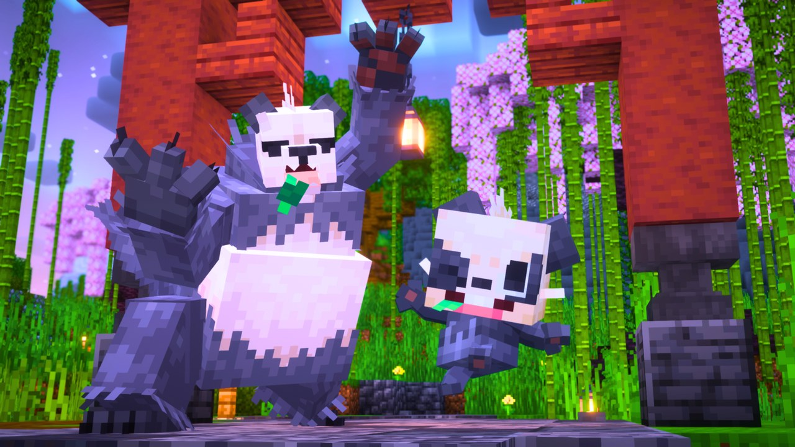
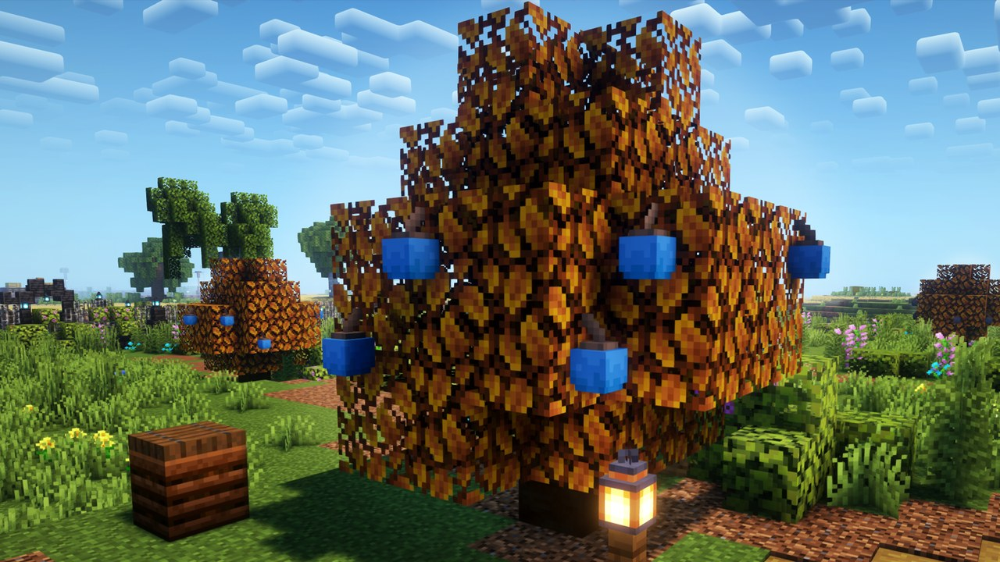
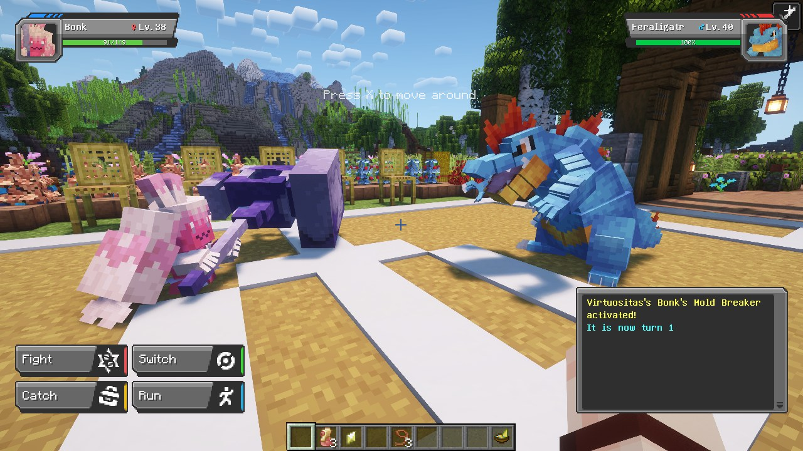
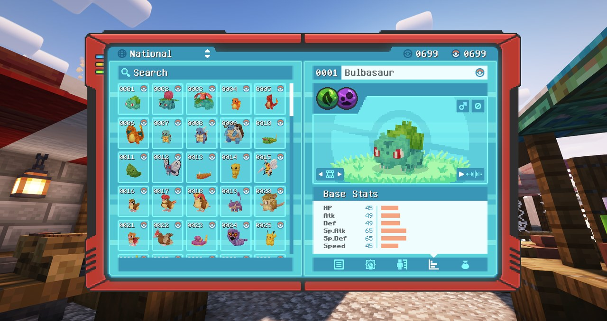
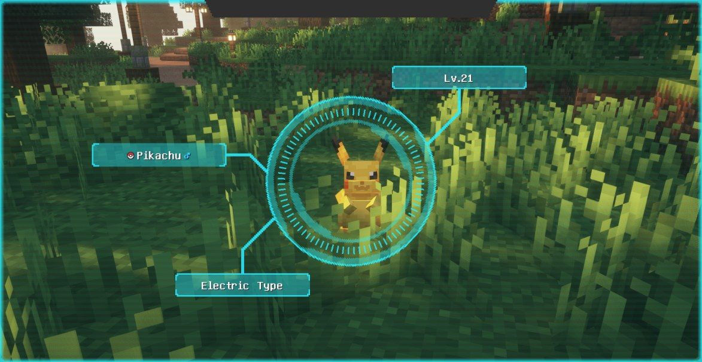

코블몬 시작 방법 총정리, 설치부터 첫 포획까지
마인크래프트 자바 에디션 1.21.1에서 Modrinth 앱으로 Cobblemon 모드팩을 설치하고 Play를 누르면 코블몬을 한 번에 시작할 수 있습니다. 설치부터 스타터 선택, 몬스터볼 포획, 회복과 보관까지 순서대로 따라 하실 수 있게 정리했는데요, 처음이시라면 위에서부터 차례로 보시면 되겠습니다. 중간에 막히는 부분이 생겨도 맨 아래 체크 목록에서 한 번에 찾아보실 수 있습니다.

코블몬 공식 갤러리 컷 «Pancham Family»
이미지 출처: Cobblemon Modrinth 갤러리
코블몬이란, 마인크래프트 포켓몬 모드 한눈에 보기
코블몬은 마인크래프트에서 포켓몬을 잡고 키울 수 있는 오픈소스 포켓몬 모드입니다. 잡을 수 있는 포켓몬이 800마리가 넘고, 마인크래프트 자바 에디션 전용이라 베드락 에디션에서는 즐길 수 없는데요. 가장 최근 버전은 2026년 10월 27일에 올라온 1.8.4이고, 마인크래프트 1.21.1용입니다. 그러니 설치하기 전에 내가 쓰는 마인크래프트가 자바 에디션인지부터 확인해 보시는 게 좋겠습니다.
레벨을 올려 새 기술을 배우고 진화시키는 것까지 되는데, 진화 시점을 플레이어가 직접 정할 수 있다는 점이 저는 제일 반갑네요. 혼자 즐겨도 되지만 멀티플레이에서는 친구와 포켓몬을 교환하고 배틀까지 할 수 있는데요. 서버는 멀티플레이 메뉴에 추가하는 방식이라, 같이 하실 분이 있다면 더 재미있을 듯합니다. 포켓몬을 잡고 키우고 친구와 나누는 것까지 한 게임 안에서 모두 해 볼 수 있습니다.
코블몬 설치하는 법, Modrinth 앱으로 한 번에
Modrinth 앱에서 Cobblemon 모드팩을 받는 설치법이 간단한 편입니다. 앱 검색창에 Cobblemon을 입력하면 모드팩이 Cobblemon [Fabric]과 Cobblemon [NeoForge] 두 가지로 나오는데요. 그중 하나를 설치한 뒤 홈 화면에서 모드팩에 마우스를 올려 Play를 누르면 시작됩니다. Fabric이 성능이 더 좋은 편이라, 고민되신다면 Fabric 쪽이 무난하겠습니다.
Modrinth 앱에서 Cobblemon 검색
앱을 쓰지 않고 직접 설치하신다면 고르신 로더에 맞춰 mods 폴더에 아래 파일을 넣으시면 됩니다.
- Fabric: Fabric API와 Cobblemon-Fabric
- NeoForge: Kotlin for Forge와 Cobblemon-NeoForge
런처는 Modrinth 앱 말고도 Prism Launcher나 CurseForge 앱으로 설치할 수 있습니다. CurseForge 앱은 Download Standalone을 눌러야 Overwolf 앱이 같이 깔리지 않으니 이 부분만 챙기세요. 런처는 이렇게 세 가지라서, 이미 쓰는 런처가 있다면 그쪽을 따라가셔도 됩니다.
설치 방법, 이럴 땐 이렇게 고르세요
- 설치가 처음이라면 Modrinth 앱 모드팩이 간단한 편입니다. 앱 검색 결과에 모드팩 두 가지가 바로 나오기 때문입니다.
- NeoForge로 설치하신다면 Kotlin for Forge를 함께 넣어야 합니다.
코블몬 스타터 고르기, 너로 정했다!
처음 들어가면 화면에 안내되는 키를 눌러 스타팅 포켓몬 선택 화면을 엽니다. 여기서 «너로 정했다!» 버튼을 누르면 첫 포켓몬이 정해지는데요. 지방 탭이 여러 개 있고(관동지방·팔데아지방 등) 대부분 지방별로 세 마리 중에서 고르며, 예를 들어 관동지방은 Bulbasaur·Charmander·Squirtle, 팔데아지방은 Sprigatito·Fuecoco·Quaxly이고 고르는 포켓몬은 모두 10레벨로 시작합니다. 탭을 넘겨 가며 비교해 보시고 마음에 드는 한 마리를 정하시면 되겠습니다.
스타터 선택 화면
제가 고른다면 〔관동지방 후보 / 팔데아지방 후보 / 화면에서 제일 끌리는 쪽〕이에요.
스타터를 고르지 않은 채 포켓몬부터 받았다면, 가진 포켓몬을 전부 PC에 넣은 뒤 화면에 안내되는 키를 눌러 고르시면 됩니다. 이미 한 번 고르셨다면 다시 고를 수는 없으니, 선택 화면에서 후보를 충분히 살펴보고 정하시는 편이 좋겠네요. 스타터를 정했다면 다음은 몬스터볼을 만들어 야생 포켓몬을 잡으러 나서시면 됩니다.
코블몬 몬스터볼 만들기, 포획과 배틀 움직임
기본 몬스터볼은 빨간규토리(Red Apricorn) 4개와 구리 주괴로 만들고, 포획률은 1배입니다. 만든 볼은 핫바에서 선택해 손에 든 다음 포켓몬을 향해 던지면 되는데요. 배틀 중에 보이는 잡는다(Catch) 버튼만 누른다고 잡히는 건 아니고, 직접 볼을 들어 조준해서 던져야 합니다. 첫 포획을 노리는 분들이 자주 헷갈리는 부분이 아닐까 싶네요.

코블몬 공식 갤러리 컷 «Apricorn Tree»
이미지 출처: Cobblemon Modrinth 갤러리
던진 볼이 빗나가거나 실패했을 때
- 빗나간 볼은 땅에 아이템으로 떨어져서 다시 주울 수 있습니다.
- 포획에 실패해 포켓몬이 깨고 나온 볼은 회수할 수 없어요.
빗나간 볼은 땅에서 주울 수 있지만, 포획에 실패해 포켓몬이 깨고 나온 볼은 되찾을 수 없으니 빨간규토리와 구리 주괴를 넉넉히 챙겨 두시면 좋겠습니다.
배틀 중에는 이렇게 움직여요
코블몬에는 배틀 중 자유 이동을 켜고 끄는 기능이 있는데요. 자유 이동을 켜 두면 배틀 중에도 건축이나 채굴, 몹 전투를 그대로 할 수 있습니다. 배틀을 걸어 둔 채로 주변 블록을 캐거나 몹을 상대하는 것도 막히지 않으니 마인크래프트 감각 그대로 움직이시면 됩니다. 기본 키는 M(상태창)·R(선택한 포켓몬 꺼내기)이고 설정에서 바꿀 수 있습니다.

코블몬 공식 갤러리 컷 «Battle!»
이미지 출처: Cobblemon Modrinth 갤러리
코블몬 회복 장치, PC, 도감 기본
다친 포켓몬은 회복 장치로 치료하고, 잡은 포켓몬은 PC에 보관하는 것이 기본 흐름입니다. 마을에 들를 일이 있다면 포켓센터가 있는지 둘러보시는 것도 좋은 방법입니다.
| 항목 | 알아둘 점 |
|---|---|
| 회복 장치 | 파티 포켓몬을 회복시키는 블록이고, 설치 직후 충전량은 0 |
| 포켓센터 | 마을에 생성되며 안에 회복 장치가 있음(1.6부터) |
| PC | 포켓몬 보관 시스템 블록, 박스는 기본 40개이고 설정에서 바꿀 수 있음 |
| 포켓몬 도감 | 들고 우클릭을 누르고 있으면 포켓몬이 스캔됨 |
새로 만난 포켓몬이 보이면 도감을 들고 우클릭을 꾹 눌러 보시는 게 좋고, PC는 파티가 가득 찼을 때를 대비해 하나 마련해 두시면 마음이 편하겠습니다.

코블몬 공식 갤러리 컷 «Pokédex»

코블몬 공식 갤러리 컷 «Pokédex Scanning»
이미지 출처: Cobblemon Modrinth 갤러리
코블몬 막힐 때 체크할 것
막혔을 때는 에디션과 파티 상태, 한국어 표기부터 확인해 보시면 됩니다.
- 베드락 에디션(콘솔·모바일)에서는 코블몬을 할 수 없습니다.
- 파티가 꽉 차 있으면 잡은 포켓몬이 자동으로 PC로 넘어갑니다.
- 한국어로는 몬스터볼, 회복 장치, 포켓몬 도감, 상태창 열기처럼 번역돼 있어요.
- 공식 서버는 없고, 공개 서버는 공식 사이트나 디스코드의 서버 목록에서 찾아 멀티플레이 메뉴에 추가하면 됩니다.
직접 눌러 가며 기능을 익히고 싶으시다면 제작진이 만든 튜토리얼 월드 Cobbled Farms도 있는데요. 모드 기능을 대화형으로 안내해 주는 월드라, 글보다 직접 움직이며 익히는 편이 맞는 분께 어울리겠습니다. 일단 Modrinth 앱에서 모드팩부터 설치해 두고 스타터를 골라 보시면 좋을 거 같아요. 막히는 부분은 게임 안 안내를 한 번 확인해 보세요. 즐거운 포획 되시길 바랍니다.
참고한 곳 (2026.11.19 기준)
· Cobblemon Modrinth
· Cobblemon 공식 위키(설치 가이드)
· Cobblemon 공식 사이트